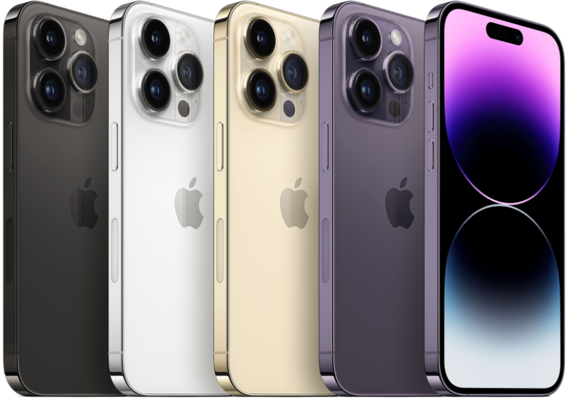

IPHONE 14 PRO
 ВЫБРАТЬЧТО НОВОГО
Все модели оснащены однокристальной системой A16 Bionic, 48-мегапиксельной основной камерой и экранами ProMotion с защитой Ceramic Shield и частотным диапазоном 1 — 120 Гц, а также ускоренной памятью LPDDR5. Дизайн линейки обновлен, на фронтальной панели смартфонов два выреза.
Все iPhone 14 в США будут продаваться без лотка для SIM-карт: производитель заявляет, что улучшенная технология eSIM позволит перенести старые электронные сим-карты на новые смартфоны.
Обновлены фронтальная камера (она снабжена автофокусом и быстрее распознает пользователя в условиях недостаточной освещенности) и сенсор основной камеры.